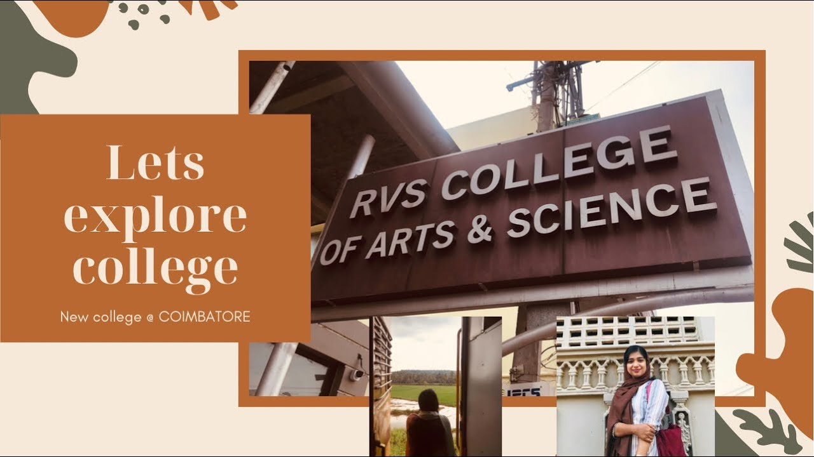
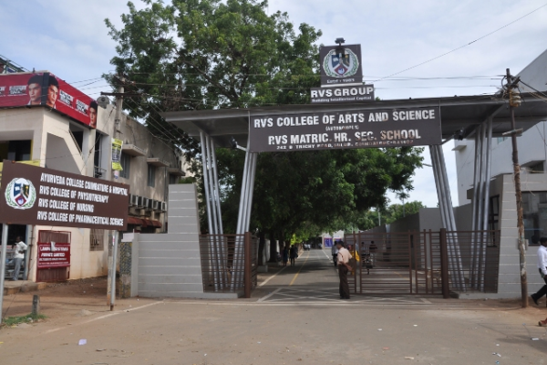
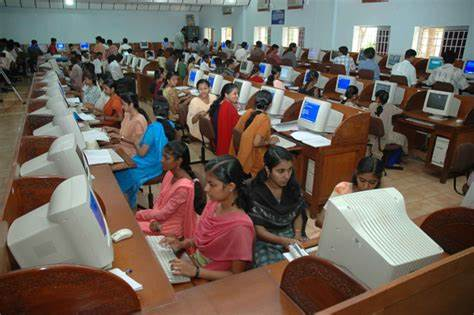
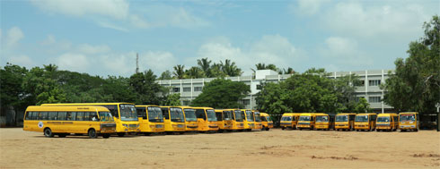
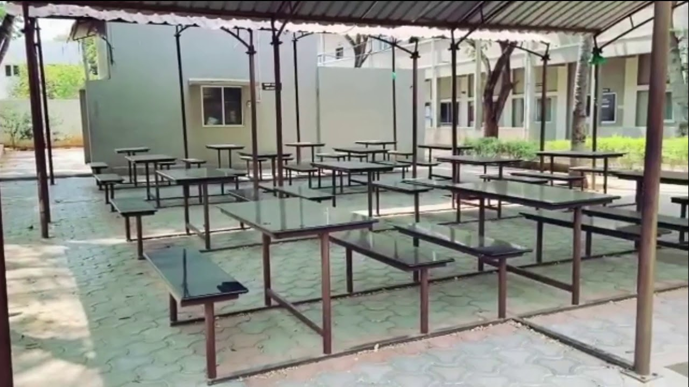

RATHINAVEL SUBRAMANIYAM COLLEGE OF ARTS AND SCIENCE
Sulur, Coimbatore.





Rathnavel Subramaniam College of Arts and Science, affiliated to Bharathiar University, Coimbatore, offer career-oriented education leading to graduation, post-graduation and research degrees in Arts and Science disciplines. Founded on 31st October, 1986, it has grown exuberantly to become one of the biggest self- financing colleges. The college was accorded autonomous status in 2004 by UGC and re-accredited in 2014 with an 'A' Grade further reaccredited in 2023 with A+ Grade.
The courses have been framed meticulously under autonomous system, to meet the demands of the industry. They also cater to the expectations of the present generation. The design and development of the curriculum was meticulously monitored by the respective Departments of the college. The College has on its roll a team of talented, dedicated and competent faculty adept in industry experience as well.
The College offers Bachelors, Masters and Research programs in various streams like Computer Science, Electronics, Management, Commerce, English Literature, Mathematics and Life Sciences.